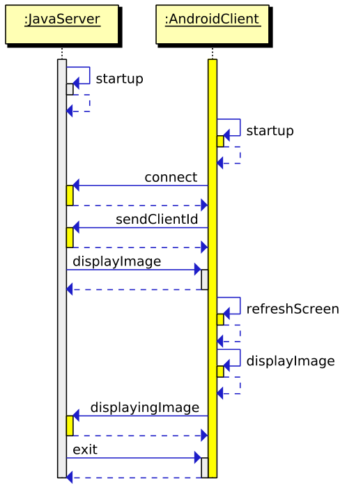

AndroidRemoteSlideshow
This project is used at the department of General Psychology of the University of Bamberg. It is part of a study conducted by Marius Raab.
Hardware
The neccessary hardware consists of a rooted Android E-ink reader (e.g. the Nook Touch) and a computer that has the Java Runtime Environment installed. The Android device is regarded as the client, the computer as the server. Both devices have to be connected to the same local network.
Purpose
The purpose of this project is to display an image slideshow on the Android Eink Reader (the client) that is directed from the computer (the server). Both devices establish a TCP connection over the local network. The connection is used solely to transmit commands, but not to transmit images. Instead a set of identical images is stored on the server and on the SD-card of client. The images on the server should be stored in an empty folder and can be located anywhere on the harddisk. This directory has to be copied directly to the SD card of the server. Do not move this folder in a subdirectory of the SD-card or the images will not be found!
Message Codes
There exists a number of message codes that make the communication between server and client possible. A message consists of a message code and the message value, separated by a colon. In short a complete message has the form "CODE:VALUE". It is encoded as an UTF-8 String which is transmitted over TCP. The following table gives an overview of each message code, its meaning and possible values:
| Message Code | Description | Possible Values |
|---|---|---|
| clientId | Sends the ID of the client to the server. Sent from the client to the server. | 1 |
| image | Makes the client display the image with the given name in the prefixed directory. | myfolder/mypicture1.png |
| diplaying | Confirms that the image in the value part of the message is shown on the client. Sent from the client to the server. | myfolder/mypicture1.png |
| blankScreen | Makes the client display a blank screen. Sent from the server to the client. | NO VALUE |
| directory | Lets the client use the given foldername from the SD-Card to display images. Sent from the server to the client. | my_image_folder |
| showImageCount | The client responds with a string that contains the number of images in the current directory e.g. "23". Sent from the server to the client. | NO VALUE |
| exit | Closes the app. Sent from the server to the client. | NO VALUE |
Sequence diagram
The following sequence diagram shows a minimal workflow. It consists of the connection establishment, the display of one image and the exit call from the server to the client.

Step by step tutorial
This step by step tutorial is written for a setup that consists of a PC as the server and two Nooks as the client. You can find the .APK files that need to be installed on the Nook and the .JAR-file that has to be run on the PC in the directory "CompiledCode" of this repository.
-
Find out the IP of your wireless adapter: Run ipconfig on the command line to obtain the IPv4-Address (neccessary for step 4). It will print something like this:
Drahtlos-LAN-Adapter Drahtlosnetzwerkverbindung: Verbindungsspezifisches DNS-Suffix: localdomain Verbindungslokale IPv6-Adresse . : fe80::3dcb:463d:3687:6331%12 IPv4-Adresse . . . . . . . . . . : 192.168.1.129 Subnetzmaske . . . . . . . . . . : 255.255.255.0 Standardgateway . . . . . . . . . : 192.168.1.1
Disable your firewall or allow it to communicate on the port 5060
Copy the images to display to your nook SD card in the folder "uni_bamberg" on the SD card. (Note that when you connect the nook to your PC two directories are mounted: the SD-card and the internal storage! The SD-Card has more space than the internal storage.) Keep the same images on your PC at C:\uni_bamberg. You can also change these directories but they have to be named the same on the nook and on the PC.
Turn on the nook (Choose ADW.Launcher if you are prompted to choose your launcher). The app will start automatically. Tap on the text that appears on the nook. Setup the IP and Port of your machine. The port is 5060 by default. The IP is the IP from step 1.
Start the server with "java -jar AndroidRemoteSlideshowServer". The Nook should connect in at most 20 seconds. If you do not want to start with the default options you can specify the port and the image directory by starting the server with "java -jar AndroidRemoteSlideshowServer --port 5060 --imagedir C:\your_image_dir". If you are running the project under Linux this will look similarly to: "java -jar AndroidRemoteSlideshowServer --port 5060 --imagedir /home/your_image_dir".
You will be prompted if you want to connect a second Nook. If you want to do so enter "y" and follow the steps 4 and 5. After that commence with step 7. The first nook will display the first image, the second nook the second image. The third image will be displayed by the first nook, the forth by the second nook. And so on...
Press enter for the next image. You will receive a message and see if the image is displayed on the nook. After you received the message from your Nook on the PC give the nook some time to refresh the screen and display the image. This can take a few seconds. To display the next image press enter again. To quit you can enter "quit" at any time and press enter.
After the last image was displayed you can chooose if you want to quit or restart the experiment.
Fix for artefacts bug
This part is very specific to the environment setup in Bamberg. That's why it is written in German.
- Der USB-Port sollte ausgeschaltet sein und die roten Lämpchen an den schwarzen Kästchen der Nooks nicht leuchten.
- Bei beiden Nooks den Schalter am schwarzen Kasten umlegen, so dass das rote Lämpchen leuchtet.
- Über den USB-Port die Stromverbindung herstellen (Der Port ist direkt mit meinem Laptop verbunden).
- Warten bis beide Nooks komplett hochgefahren sind und die Laufwerke am PC gefunden werden.
- Für jeden Nook sowohl die SD-Karte, als auch die interne Festplatte des Nooks am PC auswerfen (es sollten 4 externe Festplatten angezeigt werden).
- Ein paar Sekunden warten.
- Den Java Server starten.
- Jetzt können die Bilder durchgeschaltet werden, ohne dass ein Artefakt zu erkennen ist.